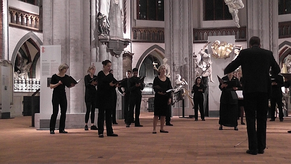

Cappella Vocale Berlin - Über uns

Foto: Lange Nacht der Museen in der Nikolaikirche Berlin-Mitte
| Die 2010 von Carsten Albrecht ins Leben gerufene Cappella Vocale Berlin hat sich zum Ziel gesetzt, Konzertformen zu entwickeln und zu präsentieren, in denen nicht nur die Übergänge verschiedener Stile und Genres der Chormusik fließend sind, sondern in denen auch Dramaturgie und Raum zu wesentlichen künstlerischen Trägern werden. Immer wieder bietet die Cappella Vocale selten zu hörende Kompositionen dar - vornehmlich, aber nicht ausschließlich, aus dem großen Fundus der A-cappella-Literatur. Das Ensemble arbeitet projekthaft und in verschiedenen Besetzungsgrößen. Die musikalische Leitung kann, auch innerhalb eines Konzerts, unter den Ensemblemitgliedern wechseln. Die Cappella Vocale Berlin ist ein Vokalensemble der Ev. Kirchengemeinde zu Staaken und einer der regelmäßig in der Nikolaikirche Berlin konzertierenden Chöre. |